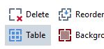
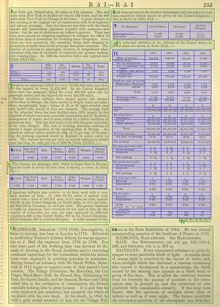
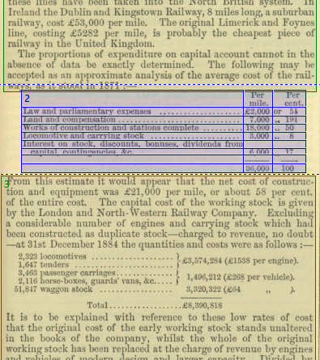

ABBYY FineReader does a better job recognizing tabular matter if it is identified as a "Table Area"
rather than a "Text Area." However, this increases the number of areas on a page, so ordering them
properly is essential.
Always check that the table is drawn correctly. When evaluating an automatically-created table or drawing
one manually, bear in mind that we are not trying to reproduce the appearance of the print table. We
want to organize the tabular data in a logical fashion, so that there is one value in each cell, and
single values (like row or column labels) are contained in single cells, rather than being split across
multiple rows or columns. See Edit tables.
For tables, use the Draw Table Area tool.  Complex pages can have multiple tables,
requiring a combination of multiple text and table areas. This takes time and managing the numbering
of your boxes becomes critical.
Figure 1: Page with both text and table areas.

All tabular matter should be identified as a table, even if it does not have rules around it. This
is critical to success in the OCR process.
When tabular data is treated as text instead of as a table, it results in output that might look
acceptable in AFR and even in the docx file. However, Word
formats it as a list, and it will not convert properly into TEI, requiring extra
work to adapt it to a table format. The work goes faster if such material is formatted as a table at
the initial OCR stage.
Figure 2: Tabular matter without rules around it.

The first instance of tabular matter is correctly identified as a table, but the second is
not and needs to be corrected by creating a four-column table with six rows. See Edit tables.